ABOUT ØREDEV
ØREDEV was founded in 2005 by Jayway, a company comprised of and focused on specialists within IT. Øredev inherited this company's vision and philosophy.
Our Vision
Øredev has its origins and focus on the software development process, from programming to project management. We work to organize an event based on the concept of quality - for learning and networking - Sharing Knowledge.
Our Philosophy
Having fun! Each year is unique, with new topics, new speakers, and new challenges. As such we have to constantly evolve and reinvent ourselves. This is both what makes our work fun for us and why we believe others having fun as a result of work is so important.
Code of conduct
Our conference is dedicated to providing a harassment-free conference experience for everyone, regardless of gender, age, sexual orientation, disability, physical appearance, body size, race, or religion (or lack thereof). We do not tolerate harassment of conference participants in any form. Sexual language and imagery is not appropriate for any conference venue, including talks, workshops, parties, Twitter and other online media. Conference participants/speakers violating these rules may be sanctioned or expelled from the conference without a refund at the discretion of the conference organisers.
Øredev Program committee
The program committee has the very hard task, first defining the content of the program, the theme of the year and the keynotes.
It is important for us to find very motivated members who are driven in their job and strive to learn, just like you. It's the way we get a balanced program with subjects you are working with today, as well as the ones you will be using tomorrow.
Ok! Let's meet the program committee members!
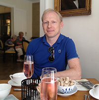Steen Lehmann
Steen has been tinkering with software ever since he was a kid in the 1980s, and befriended BASIC well enough to write flight simulators on his Commodore VIC-20. In 1995, after years of trying to get to know C++ well enough to do 16-bit Windows programming reliably, Steen started going out with Java on a regular basis. Soon a long-term relationship was formed, and the two of them could solve any problem by applying the correct Design Patterns. A series of unfortunate web frameworks gradually soured the partnership, and in 2005 Steen started seeing other languages. He is now in an open relationship with several dynamic and functional languages, and couldn’t be happier.
Professionally, Steen is a CTO and Software Designer with Jayway, which means he architects and builds software systems of all sizes for various large clients. He currently focuses on creating dynamic visualizations in JavaScript, using functional reactive programming, and also recruits sociable geeks to work for the best software experts in Scandinavia.
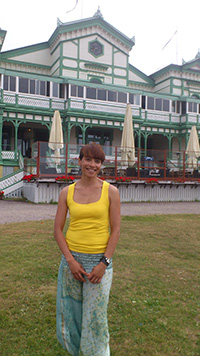Maria Kedemo
I recently googled myself to see if something unwanted and fun would show up.
The result made me feel relieved, satisfied but also slightly disappointed.
Most information about me is related to software testing. I'm very happy that is the case since I am passionate about the subject. My participation in Øredev unfortunately took a bit of scrolling and clicking to find. This was a bit disappointing since I am really proud to be in the program committee.
So what didn't turn up in my search? Let's not get into details but these are a few things I wouldn't mind showing:
- My red, exhausted face after having completed Toughest 2013 in Copenhagen with very little preparation.
- My lovely, crazy family hanging at the playground or running around on the beach a warm summer day.
- Me, indulging cheese, pata negra, scallops, ice cream, dark chocolate or a juicy steak. This is a place were you might find me: http://www.bastardrestaurant.se/
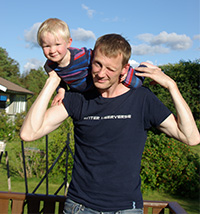Christian Jacobsen
Christian is consultant at Jayway in Stockholm who spends (too) many hours of the day in front of the computer producing software in various shapes and forms. His love for computer science is surpassed only by his love for his family who patiently puts up with this sometimes manic interest.
Christian is your stereotypical Scandinavian: a bit introvert, polite, blond and tall. But on the inside burns a fire, a fire fueled by a passion for technology and knowledge. He often thinks that if he could only invent the ultimate technology it could help him seize world domination....no sorry, help humanity and this world of ours become a better place!
Other than family and computers Christian enjoys skiing and surfing and really REALLY hopes that the three year old will soon start sharing these interests too.
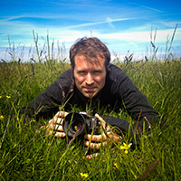Fredrik Mörk
I have always been working with software development. But I was not one of those kids who started exploring computers while they were still in school. Those days I was too busy being a birding geek, learning the scientific names of hundreds of bird species. Got a camera to get some pictures of birds. Turns out photography was pretty fun too. Then I discovered programming. Luckily I can get paid doing that.
Does that say who I am? I don't know. Perhaps I am better described by what I enjoy? A cup of coffee in the outdoors. A walk. A good unit test. A well-prepared meal together with the person who took that photo of me. Seeing the kids figure stuff out. Being exhausted after a good workout. A nice golf shot.
Work-wise I have spent my time mostly in Microsoft land. Visual Basic 3 got me into programming to start with and today C# is my language of choice. I have always worked as a consultant, liking the opportunity it gives me to experience different organizations and various ways of working. And I still wonder what to become when I grow up.
@fmork
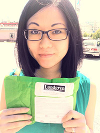Danwei Tran Luciani
My dad repaired broken TVs and VCRs for a living so instead of playing with dolls, I grew up playing with assorted electrical components and later became obsessed with figuring out how to set the time to record shows on as many different kinds of VCRs as I could come across. That was my early introduction to technology and usability, two of my main interests that have stayed with me ever since, and is probably one of the reasons why I ended up with double Master’s degrees in Software Engineering and Interaction Design.
I have now worked at Microsoft for more than 5 years and am currently a Technical Evangelist focusing on UX to bring quality apps to the Windows platform. I believe strongly in taking pride in craftsmanship and honest design, and after having a son I’m more than ever convinced that a mother possesses the only intuitive interface, everything else is learned.
I use the Dvorak keyboard layout, play Xbox One games, enjoy Geocaching with stealth, try to doodle more, and have a soft spot for bunnies. You can find me blogging sporadically at www.danweitran.com and tweeting pretty regularly as @danweitran.
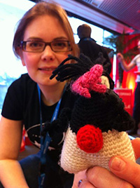Klara Ward
Just another day in the life of Klara Ward:
- Woke up to a snowy landscape.
- Watched Swedish MasterChef on the bus to work.
- Edited some code for a new experimental feature in a coming version of Java Mission Control.
- Wrote some slides for my EclipseCon talk.
- Didn't keep up with my twitter feed (@klaraward)
- Went to yoga during lunch.
- Did preparations for deploying the next JMC version.
- Listened to country music in car driving home from work.
- Picked up 5-year-old from daycare, had dinner and read her a story.
- Wrote Øredev program committee bio.
- Looked at crochet projects on Pinterest.
- Picked up 7-year-old from friends house.
- Read Harry Potter to kids (5-year-old falls asleep after 1 page)
- Thought about watching Doctor Who with husband.
- Fell asleep.
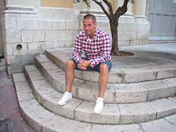Pär Sikö
I was born in Kiruna in the middle of the freezing winter, luckily my parents regained their common sense shortly after and moved back to the safe havens of Skåne, where I’ve stayed ever since.
I’ve been presenting at conferences for many years, and I’ve spend many hours listening to others presenting. As a result, I’m allergic to boring presentations, bullet points, and unenthusiastic presenters; just a hint for those of you who submit session proposals.
One thing, that not many know about me, is that I’ve been bicycling 5 kilometer on a busy German autobahn (freeway). Why? Buy me a beer and I’ll tell you the story.
Contact me at per@oredev.org
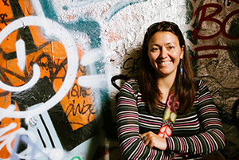Emily Holweck
I am of mixed upbringing. My father was a sidetracker and my mother was a shape shifter. So, I am not of the kind of person who reads the instruction manual before. Easily bored, I am always in movement or trying to make things happen...perhaps that's why Øredev is so different and continues to evolve. My job consists of translating developers' needs and culture into an awesome event. For that reason I shamelessly tap into the brain of every developer I meet... and everyone else! I collect the good bits, add some leadership and organizational skills, sprinkle some cat power and glitter et voilà!
About my free time, I can't decide if I prefer the deepness of the big blue to the highness of the mountains. I am quite often in-between destinations, far from the ground, below the sky but always reachable at emily.holweck@oredev.org
I hope you are ready for boarding on Øredev 2014!
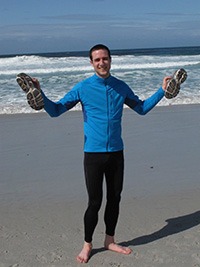Jacob Wolman
Jakob is a passionate team gardener. He makes teams grow and to see them bloom is his reward. Cross pollination, fertilising, watering and plenty of sunshine is some of his favourite tools. Jakob thinks pruning is hard, but s o m etimes necessary. He puts a lot of effort in creating the best possible environment for his plants. He spends time talking and listening to them.
Currently, Jakob is gardening teams at QlikTech in Lund, Sweden. Whenever he gets out of his garden, what Jakob loves the most is running, in the forest.
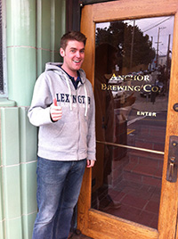Martin Gunarsson
Martin Gunnarsson, what a guy. If he’s not working, running or relaxing at home, you can usually find him at some pub or bar sipping the latest over the top hoppy hipster IPA. Superb quality and attention to detail can really get him going, no matter if it’s in software, cars or furniture.
One of the greatest moments in his life was sharing a bathroom with Jamie Hyneman from Mythbusters, sadly he didn’t realise it until afterwards when the moment was gone.
Martin has worked with software development in many different forms on many different platforms throughout the years, usually with focus on web or other front end technologies. Nowadays he’s the manager of a brilliant team at Axis Communications, busy building world class web interfaces and improving usability and user experience in different projects throughout the company.
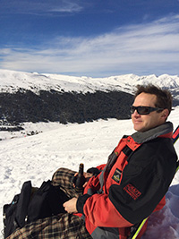Anders Janmyr
Anders Janmyr is a developer since about twenty years. He loves writing code but, also talking and writing about it.
He has worked in many different domains, from databases and servers to mobile phones and robots, and has experience with small and large scale architectures. He has a wide experience of programming languages C, Smalltalk, Java, C#, Haskell, Lisp, Ruby and Javascript among others. The last years he has spent mainly with Ruby and Javascript.
He loves the combination of dynamic languages and test-driven development since it gives him a short feedback loop and peace of mind.
He blogs at http://anders.janmyr.com.
Twitter: @andersjanmyr
Magnus Hilding
Magnus Hilding is responsible for the SW strategy work in Sony Mobile, and has been instrumental in Sony Mobile's shift from a feature phone company to a smart phone company. Magnus has been key to driving the Sony Mobile SW division direction through work on product development strategies, business requirements, technology roadmaps, software development standards, UI frameworks, security solutions, web technologies and Social-Mobile integration. A native of Sweden, Magnus currently lives in Palo Alto and, among other things, directs Partner Engineering efforts with Silicon Valley companies like Google.